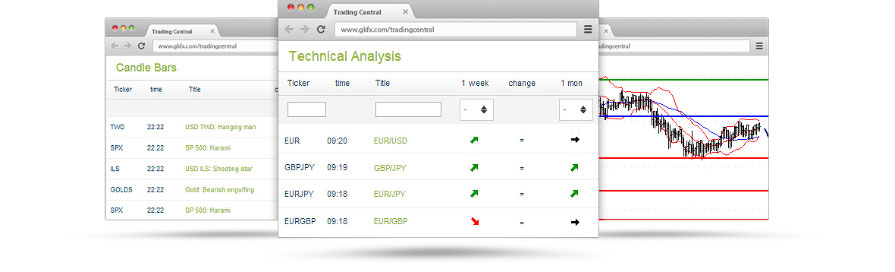
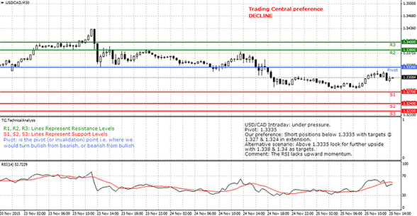
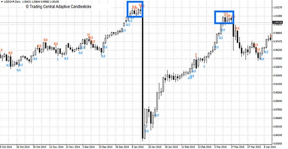
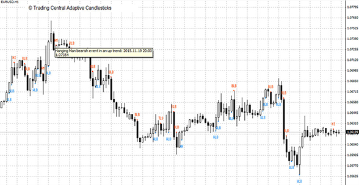
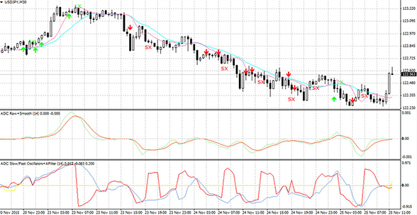
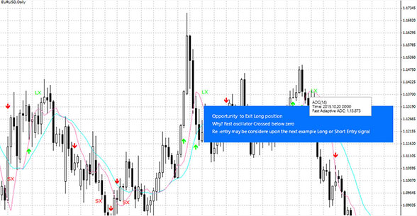

屡获殊荣的自动分析交易工具屡获殊荣的自动分析交易工具
Trading Central是屡获殊荣的专业技术分析工具。Trading Central是一家提供来自于各大投行和资管公司技术分析的实时投资研究的领先供应商。专业报告涵盖所有主流外汇货币对、股指和商品，每种产品每日策略更新10次。目前，Trading Central自产的技术指标能在您的MT4平台上提供买卖信号。详情请咨询我们的客服支持团队。

活用EA让您的交易自动化，将您的策略植入MT4平台让其按照您所希望的方式进行交易。您可以通过智能交易系统（EAs）来实现自动化交易。我们对EAs没有任何限制，因此您可以不断回测和优化EAs直至对其性能满意，并开始自动化交易。
作出明智决策，MT4平台作为外汇软件，内含高级图表功能和30种以上的技术指标来支持您的交易分析。我们希望您可以充分利用这个平台的功能，对市场产生一个全面的看法。这也是我们为真实客户提供免费使用分析工具套装的原因。您将会收到覆盖所有主流资产类别的市场分析音频，富有洞察力的技术分析报告，以及尖端图表形态识别工具。
做出明智的决定
MT4平台或外汇软件附带一个先进的图表包和30多个技术指标，以支持您的交易决策。我们希望您能够充分利用该平台的功能，并全面了解市场。这就是我们的真实帐户客户可以免费访问一组研究工具的原因。您将收到涵盖所有主要资产类别，富有洞察力的技术分析报告和复杂的图表模式识别工具*的音频市场评论。
*其中一些工具需要缴纳最低入金。
阿尔法生成指标
支持有信心的投资决策
阿尔法生成器为投资者提供三种创新的MT4工具，帮助他们在风险调整的基础上提高投资回报。这些指标叠加在业界已知和喜爱的MT4图表中！
分析师观点（AOI）

您目标级别的可靠来源
根据我们屡获殊荣的技术分析方法，Trading Central始终在每个图表上都有一个方向性的视角。获得我们首选方向的即时观点以及叠加在活跃交易工具图表上的目标水平！根据枢轴级别发现我们的替代方案，我们将改变视图并提供相反方向的目标级别。
自适应蜡烛图（AC）
你对牛市和熊市的看法。 交易者喜欢烛台图表，现在可以即时访问烛台图案，这些图案说明了供需线的重大变化以及买卖双方之间的斗争。该指标可让您访问：
·我们最喜欢的模式：我们的指标可以在任何图表上立即扫描我们最喜欢的16个时间信任的烛台图案！

·重要的专家过滤：我们将烛台与我们独特的定量和技术分析专业知识结合起来，只关注那些与当前背景下的决策相关的模式。

自适应趋异指标（ADC）
如果你喜欢MACD，你会喜欢这个短期交易指标！
它在比MACD更短的长度上有用，并提供更及时的信号，同时通过在这些时期内适应和延长来防止侧向运动。获得访问权限：


·长短进入/退出信号
·缓慢而快速的价格指标
·原始和平滑的信号线
·振荡器 - 慢速和快速
概率市场分类器
这是一个真实但经常被忽视的事实，即大多数指标衍生的交易信号在横向市场中都会亏损。根本原因在于其设计背后的逻辑隐含地将市场视为看涨或看跌，并且缺乏处理横盘的策略。即使存在策略，也存在一个问题，即知道横向时期何时开始以便可以应用。概率市场分类师（PMCs）根据贝叶斯规则和市场分类提供市场看涨，看跌或横盘整理的概率。它们提供了确认交易信号所指示的市场类别的能力，以便可以忽略未经证实的交易信号并避免潜在的损失。横向市场的开始也可能是看待卖出期权的适当时机，而PMC在提供进入和退出信号以利用时间溢价的衰减方面可能是独一无二的。
T对于看跌，横盘整理和看涨的市场，PMC将给出0到100之间的概率。 欧元/美元周线图。 2014年5月欧元兑美元汇率在1.3610附近交易时，PMC指标点开始指向下跌的可能性很高（红线）。
您还可以组合多个期间以获得更好的概率前景。我们建议在输入周期参数中使用5,8和13。
概率停顿
想要概率停止的一个明显原因是为了使被阻止的机会更加一致;通过寻找最佳折衷价格以允许正常波动，但如果基础价格与交易相反，则触发止损。概率停留的统计谱系允许其使用扩展到至少两个应用：（i）在进入交易之前评估交易风险，以及（ii）与支持和阻力数据相结合以产生与概率相关的进入信号。
与在每个时间步骤具有单个数据点的标准时间序列不同，市场时间序列通常以开放，高，低和收盘价格的形式到达。为了计算可能触发停止的价格变动，需要考虑信号线的高价和低价四肢。您必须熟悉一系列数据点的平均值（平均值，μ）及其在该平均值附近的离散度（标准偏差，s）。高斯分布描述随机噪声，并且仅基于均值和标准偏差。出于目前的目的，突出的特性是噪声偏离平均值的概率可以与标准偏差的数量相关。
止损单的理由是保护交易免受过度损失。有交易的事实意味着有外部原因相信价格会向某个方向发展。止损需要足够宽，不能由常规价格波动触发，但如果基础价格信号（即本地均值）表现与预期相反，则足够接近触发。鉴于此要求，止损应反映当地平均值（μ）当前价格波动的合理限制。
这意味着如果可以找到合适的局部均值和标准偏差，单独由噪声波动触发停止的概率可能与“宽度”参数（w）和建立或挂起的局部标准偏差的乘积有关。来自当地的意思;即符号μ±w s取决于是买入（+）还是卖出（ - ）止损。
宽度参数（w）可能因仪器而异，严格应通过每个仪器的反复试验找到。在实践中，值2似乎对大多数人来说非常有效，这与通常用于基于高斯的置信限制的值一致。
在输入参数框中，您可以选择要设置的概率停靠点的长度和宽度。
美元/加元15分钟图表。交易中心概率停止指示器可帮助您在任何时间框架上查看停止水平的位置。
规范动量
动量可以是一个嘈杂的数量，需要在进行合理的推论之前进行平均。通常，所需的推论是在价格转折点之前的转折点。与平均相关的滞后和太多的次要动量转折点会影响交易推理的质量。正则化是一种平滑技术，被认为比单独平均更好，这可以消除不必要的动量转折点，并且在相同程度的平滑性方面提供较少的滞后。因此，动量的交易意义集中在那些剩余的转折点上;如此有利可图的推论更容易。进一步的副产品是能够创建有用的动量指标和振荡器，长度很短;提供即将发生价格变动的预警系统。
英镑/美元4小时图

规范化买卖压
买入卖压（BSP）反映了收盘价趋势在近期趋势中处于上升趋势和低点附近的高点附近。 BSP是一种噪声信号，正则化有助于消除噪声，因此可用作交易指标。 英镑/日元日图
规范化RSI
RSI在Wilder 1978年出版的“技术交易系统中的新概念”一书中有所定义，并且被广泛记录。它用作指数平滑常数为1且正则化参数通常为1的操作数。这种用法意味着正则化仅用于平滑
美元/加元周线图。 TRADING CENTRAL正规化RSI比传统的平滑技术提供更少的信号和更少的滞后。